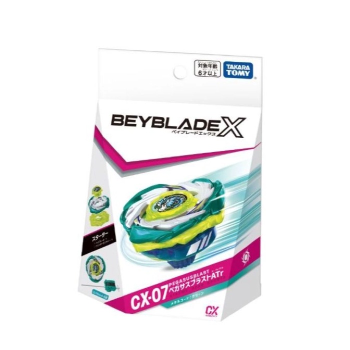
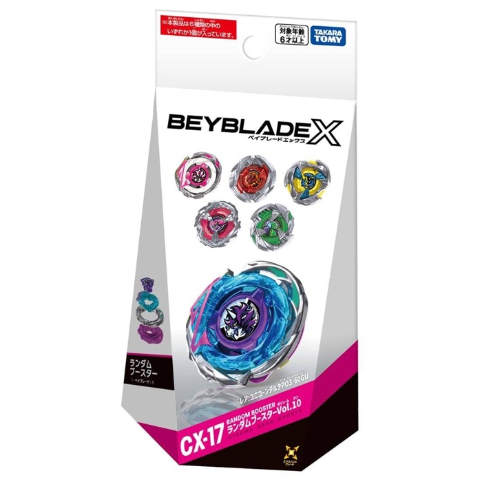
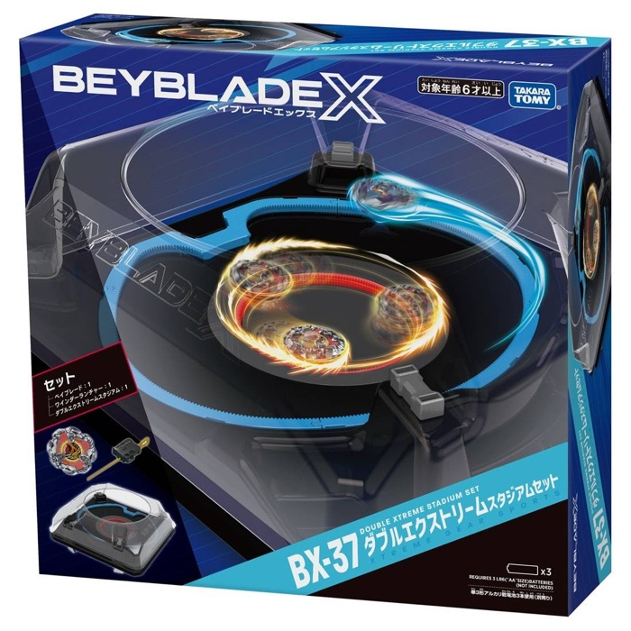
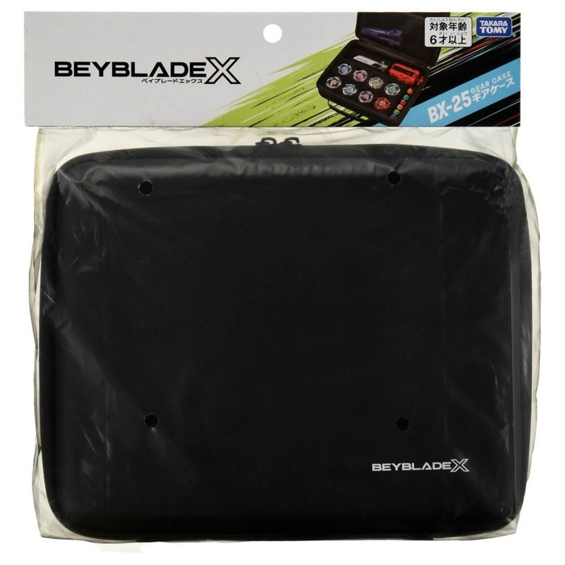
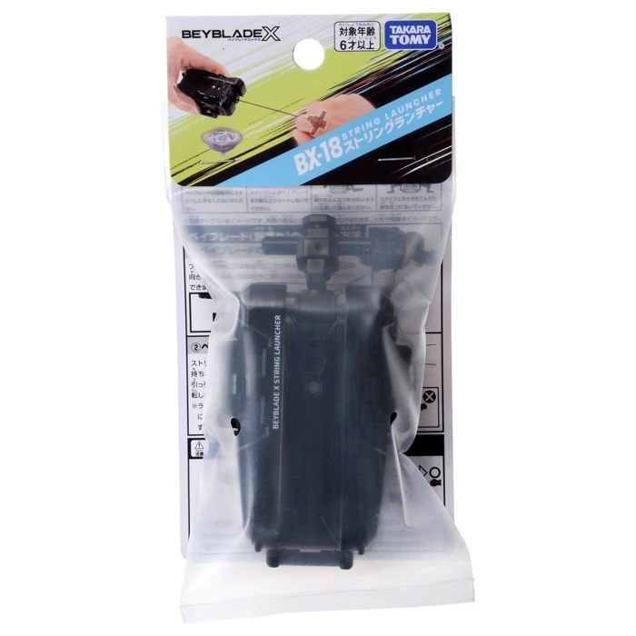

🕹️

實體店：24H 娃娃機
新北市中和區景平路 593 號之 1，就在捷運中和站旁、連城路口公車站步行約 1 分——來現場夾娃娃、看戰鬥陀螺對戰，開幕籌備中。
戰鬥陀螺・娃娃機・線上一番賞——公開亂數可驗證公平，24 小時想玩就玩。
傳統扭蛋或刮刮樂可能槓龜，但一番賞不一樣：每一張籤都對應到一個獎品，所以你每抽一定會拿到東西，差別只在賞別大小（A 賞、B 賞……到最珍貴的最後賞）。這也是一番賞讓人「一抽再抽」的魅力來源。
新北市中和區景平路 593 號之 1，就在捷運中和站旁、連城路口公車站步行約 1 分——來現場夾娃娃、看戰鬥陀螺對戰，開幕籌備中。

戰鬥陀螺一番賞，正版市購品、原廠外包裝——每一抽都是實體商品，不是虛擬點數。






抽走整套最後一張籤，獨得全場最稀有的 LAST ONE 賞——空力天馬紅色限定版，市價上看 8,000+。
新北市中和區景平路 593 號之 1
捷運中和站旁・連城路口公車站步行約 1 分